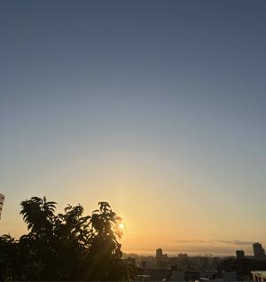
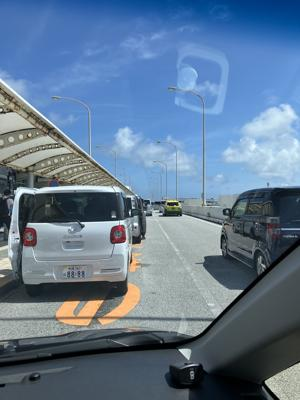

うるがいの話 ある日
最新: のどの痛み【うるがいの話 ある日】とは 一日だけのプログです
『うるがいの話』の最新一日だけのプログで、通信料が少なく経済的だ。カニの画像をクリックすると全ての日付が載る『うるがいの話』サイトを表示します
|
|
【うるがいの話】 うるがい(ｳﾙｶﾞｲ urugai)とは、『もずくがに』の名前でとても大きくなります。 |
|---|---|
|
|
【カミマヤーの話】 猫のことを方言でマヤーといいます。カミマヤー（kamimayaa）とは、神の猫のことです。 |
|
【たながぁの音楽】 たながぁ（ﾀﾅｶﾞｰ tanagaa）とは手長えびのことで、何種類かあり大きいのは車 エビぐらいになります。 |

|
【ぶながぁの話】 ぶながぁ(ﾌﾞﾅｶﾞｰ bunagaa)とは、赤い髪の毛、赤い身体、そして身長は１ｍ２０ｃｍ ぐらい、川の蟹を食べているの目撃された。場所は沖縄県国頭郡大宜味村のと ある村僕の隣近所に住んでいる爺さんから、聞いた話です。 |
|
|
【ギーマの話】 ギーマ(giima)とは、山原の里山に咲くスズランに似た、 花を付けます。実は食べられます、 気が付くと口の周りが紫になっています。 |
2025年05月23日 (金）のどの痛み
16:33

コドモを予定通りに空港へ、遅れた。ホットする。昨日の夕方、体
調が悪くなる。夕ご飯も食べる気がせず、熱は３８度もある、その
まま、眠る。今朝になると熱も３６度台に下がっていた。治ったの
か。

月曜日に病院へいった子供は、昨日の夜から外へ出かけ始めた。た
だ、ヨメの体調がいまいちと念のため、午後に２回目の通院。喉が
痛いと訴え、今回は医者（滅茶苦茶若い）が待機している車までき
て直接、喉を診察。ま、大したことないですと。私も喉は、いまま
でに経験したことがないくらい、かなり痛いんだけどとヨメに言う。
当院で新型コロナ陽性となった直近165名の方の訴えられた主な
症状は次の通りです。
（平均年齢39.3歳、女性の割合は55.6％。複数回答可）
のどの痛み：72.2％
咳・痰：72.2％
発熱（38度以上）：66.7％
ん、確かにその通りです。今日も、発熱外来は２，３名いた。